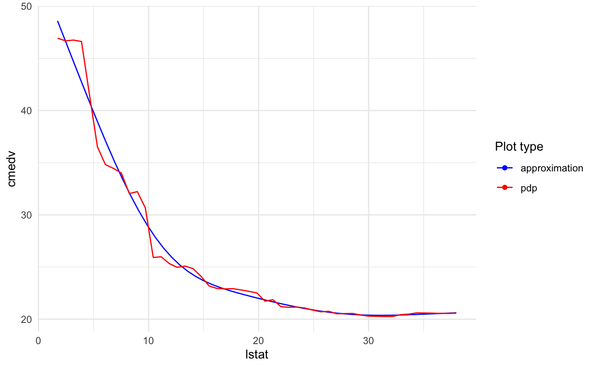
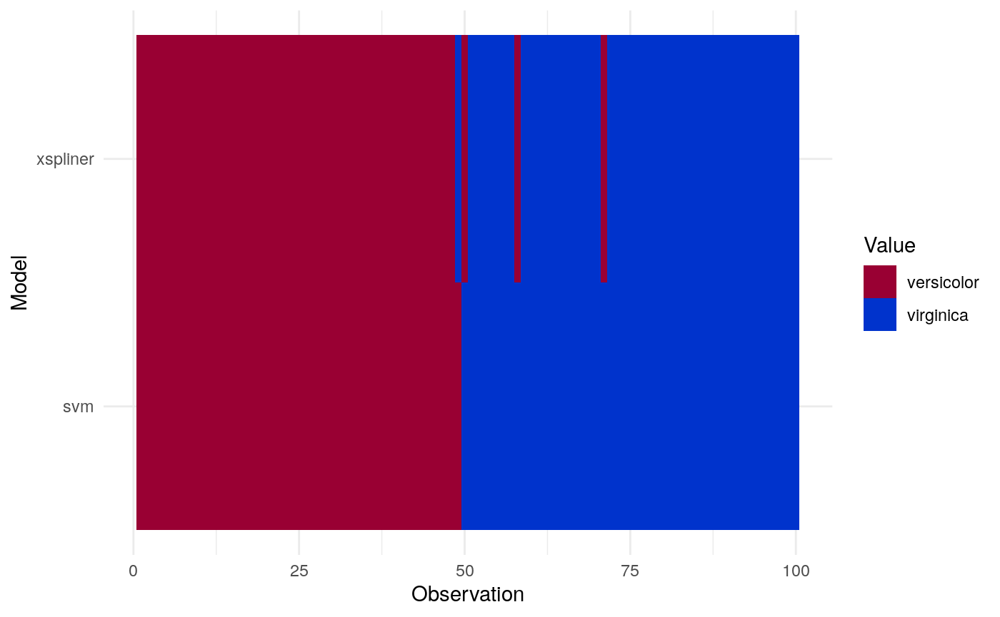
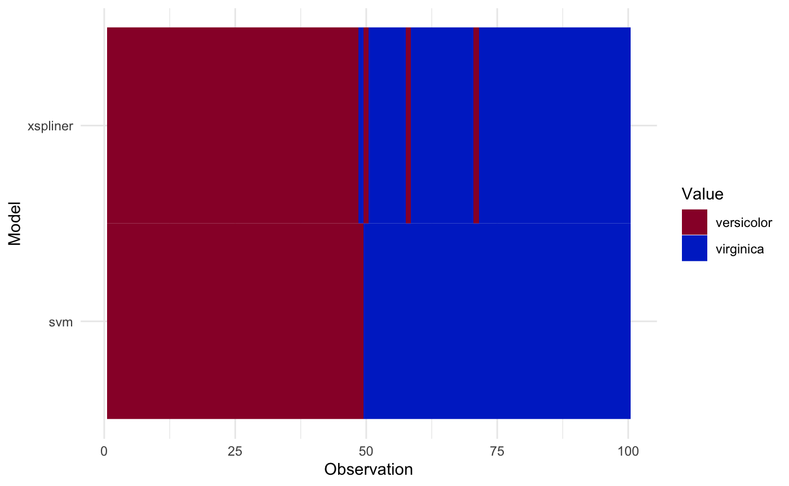
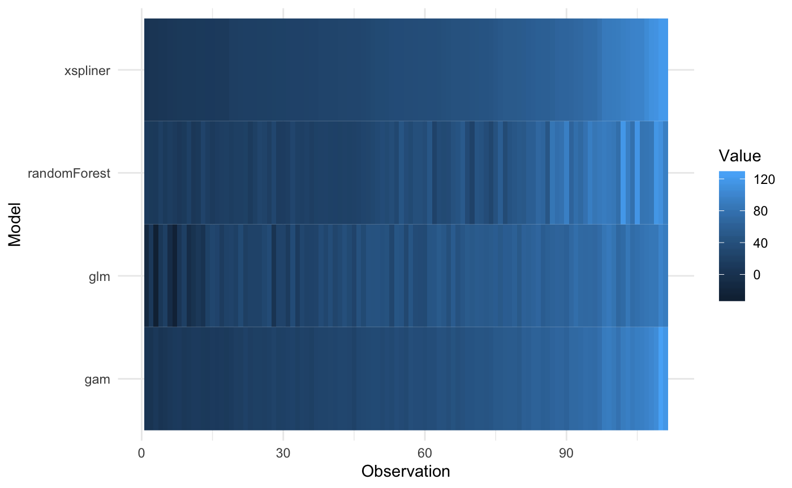

Graphics
Krystian Igras
2019-08-31
graphics.RmdThis document presents possible options of how the final model can be described through plots and graphics
Single variable results
As you actually saw in the previous sections, the model transformation can be presented on simple graphics. In continuous predictor case, the transformation is plotted as estimated spline - in case of discrete predictor, factorMerger plot is used.
For quantitative predictors some additional options are offered. Let’s check them on the below examples.
Let’s use already known Boston Housing Data, and a random forest model.
## 'data.frame': 506 obs. of 16 variables:
## $ lon : num -71 -71 -70.9 -70.9 -70.9 ...
## $ lat : num 42.3 42.3 42.3 42.3 42.3 ...
## $ cmedv : num 24 21.6 34.7 33.4 36.2 28.7 22.9 22.1 16.5 18.9 ...
## $ crim : num 0.00632 0.02731 0.02729 0.03237 0.06905 ...
## $ zn : num 18 0 0 0 0 0 12.5 12.5 12.5 12.5 ...
## $ indus : num 2.31 7.07 7.07 2.18 2.18 2.18 7.87 7.87 7.87 7.87 ...
## $ chas : Factor w/ 2 levels "0","1": 1 1 1 1 1 1 1 1 1 1 ...
## $ nox : num 0.538 0.469 0.469 0.458 0.458 0.458 0.524 0.524 0.524 0.524 ...
## $ rm : num 6.58 6.42 7.18 7 7.15 ...
## $ age : num 65.2 78.9 61.1 45.8 54.2 58.7 66.6 96.1 100 85.9 ...
## $ dis : num 4.09 4.97 4.97 6.06 6.06 ...
## $ rad : int 1 2 2 3 3 3 5 5 5 5 ...
## $ tax : int 296 242 242 222 222 222 311 311 311 311 ...
## $ ptratio: num 15.3 17.8 17.8 18.7 18.7 18.7 15.2 15.2 15.2 15.2 ...
## $ b : num 397 397 393 395 397 ...
## $ lstat : num 4.98 9.14 4.03 2.94 5.33 ...data(boston)
set.seed(123)
library(randomForest)
boston.rf <- randomForest(cmedv ~ lstat + ptratio + age, data = boston)Also let’s build xspliner model with lstat and ptratio transformation.
In order to plot specified predictor transformation just use:
You can also add some additional information for the plot.
Plotting training data
Just add two parameters: data = <training data> and flag plot_data = TRUE.

Plotting approximation derivative
The derivative is plotted on scale of the second axis. To display it just add: plot_deriv = TRUE.

You can also specify if the model effect or transition should be displayed. Parameters responsible for that are plot_response and plot_approx respectively.
For example below we display just the approximation and derivative for ptratio variable:

Models comparison
As we may want to compare the final GLM model with its parent black box, xspliner provides one simple tool.
For comparison just add model parameter for plot method, and provide data:

The resulting graphics compares predicted values for both GLM and black box model.
For predicting values standard predict method is used: function(object, newdata) predict(object, newdata). So for regression models the results are on the same scale.
The notable difference occurs in the classification models. GLM models by default return “link” function values, so for classification it can be any real number. Contrary to that, randomForest function returns predicted levels.
To avoid the problem, predictor_funs parameter was added. This is the list of prediction functions for each model (in order: black box, xspliner). Let’s see it on SVM example:
iris_data <- droplevels(iris[iris$Species != "setosa", ])
library(e1071)
library(xspliner)
model_svm <- svm(Species ~ Sepal.Length + Sepal.Width + Petal.Length + Petal.Width,
data = iris_data, probability = TRUE)
model_xs <- xspline(Species ~ xs(Sepal.Length) + xs(Sepal.Width) + xs(Petal.Length) + xs(Petal.Width),
model = model_svm)Now we specify predict functions to return probability of virginica response.
prob_svm <- function(object, newdata) attr(predict(object, newdata = newdata, probability = TRUE), "probabilities")[, 2]
prob_xs <- function(object, newdata) predict(object, newdata = newdata, type = "response")And plot the result
It is also possible to sort the values of heatmap according to chosen model:
plot(model_xs, model = model_svm, data = iris_data,
prediction_funs = list(prob_xs, prob_svm),
sort_by = "svm"
) In case of class predictions, let’s create class prediction function first:
class_svm <- function(object, newdata) predict(object, newdata = newdata)
response_levels <- levels(iris_data$Species)
class_xs <- function(object, newdata) {
probs <- predict(object, newdata = newdata, type = "response")
factor(ifelse(probs > 0.5, response_levels[2], response_levels[1]), levels = response_levels)
}And plot the result:
Sorting values according to specified model is also possible:
plot(model_xs, model = model_svm, data = iris_data,
prediction_funs = list(class_xs, class_svm),
sort_by = "svm"
) 
Comparing with another models
Following above approach it’s easy to generate similar graphics for higher amount of models.
Just include additional models inside compare_with parameter (named list), and add corresponding predict functions to them to predictor_funs parameter (if omitted, the default one is used).
See below example on airquality data
library(mgcv)
data(airquality)
ozone <- subset(na.omit(airquality),
select = c("Ozone", "Solar.R", "Wind", "Temp"))
set.seed(123)
model_rf <- randomForest(Ozone ~ ., data = ozone)
model_xs <- xspline(Ozone ~ xs(Solar.R) + xs(Wind) + xs(Temp), model_rf, data = ozone)
model_glm <- glm(Ozone ~ ., data = ozone)
model_gam <- mgcv::gam(Ozone ~ s(Solar.R) + s(Wind) + s(Temp), data = ozone)
plot(model_xs,
model = model_rf,
data = ozone,
compare_with = list(glm = model_glm, gam = model_gam),
sort_by = "xspliner")
Plotting more transitions at once
If you want to display many transitions on one plot just pass xspliner model to plot:

For models trained on top of many predictors, there will be displayed plots for 6 first transformed variables. To change that value just set n_plots variable:

You can select interesting variables to plot just passing predictor names in vector: